Chapter 30 Probability and Statistics
This book assumes that the readers have basic knowledge of probability theory and statistical inference. Therefore, this chapter is not a comprehensive review of probability and statistics. For easy reference, I review the key concepts that are crucial for the main text.
Appendix 30.A Probability
30.A.1 Pearson correlation coefficient and squared multiple correlation coefficient
For two random variables  and
and  , define the Pearson correlation coefficient as
, define the Pearson correlation coefficient as
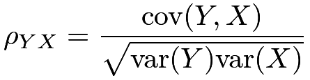 |
which measures the linear dependence of on . The definition is symmetric in and in that
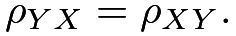 |
With a random variable and a random vector , define the squared multiple correlation coefficient as
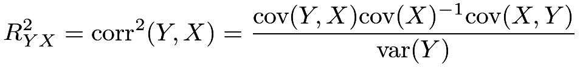 |
where
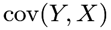
is a row vector and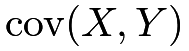
is a column vector. It also measures the linear dependence of on . But this definition is not symmetric in and .
30.A.2 Multivariate Normal random vector
A multivariate Normal random vector
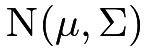
is determined by its mean vector and covariance matrix
and covariance matrix 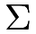
. Partition it into two parts: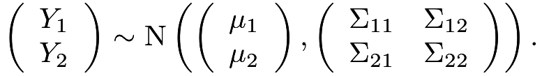 |
First, the marginal distributions are Normal:
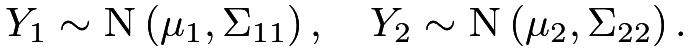 |
Second, if
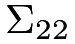
is positive definite, then the conditional distribution is also Normal: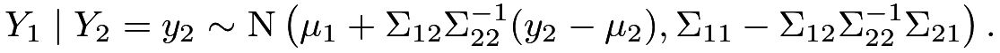 |
30.A.3
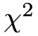
and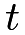
distributionsAssume
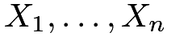
are IID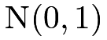
. Then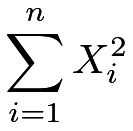 |
follows a
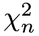
distribution with degrees of freedom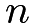
. The distribution has mean and variance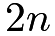
.Assume
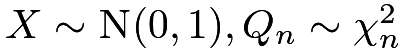
and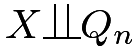
. Then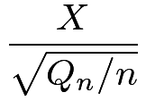 |
follows a
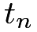
distribution with degrees of freedom . The distribution has mean 0 if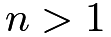
. When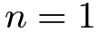
, the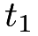
distribution is also called the Cauchy distribution, which does not have a finite mean.30.A.4 Cauchy–Schwarz inequality
The Cauchy–Schwarz inequality has many forms. With two random variables
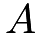
and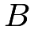
, we have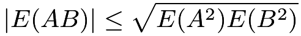 |
with equality holding when
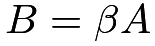
for some . Centering and to have mean 0, we have
. Centering and to have mean 0, we have
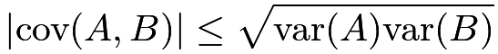 |
with equality holding when
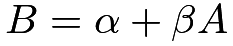
for some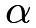
and.
When and are uniform random variables over finite sets
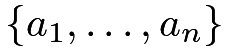
and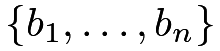
respectively, we have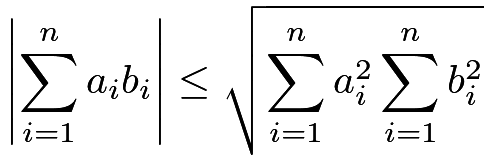 |
with equality holding if there exists such that
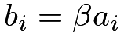
for all ’s.
’s.
30.A.5 Tower property and variance decomposition
Given random variables or vectors
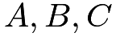
, we have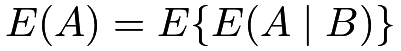 |
and
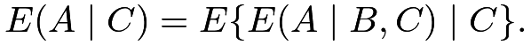 |
Given a random variable and random variables or vectors
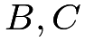
, we have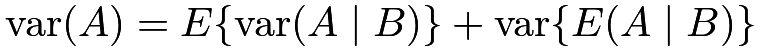 |
and
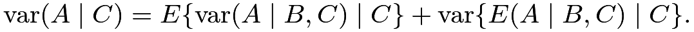 |
When I was in graduate school, my professors Carl Morris and Joe Blitzstein called this formula the Eve’s Law due to the “EVVE” form of the formula. They then went back to call the first tower property the Adam’s Law.
Similarly, we can decompose the covariance as
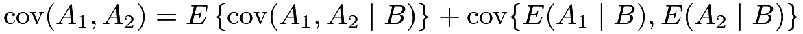 |
and
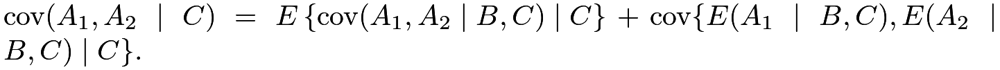 |
30.A.6 Limiting theorems
Definition 30.1 (convergence in probability)
A sequence of random variables 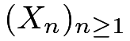 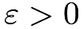 in probability, if for every
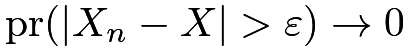 |
as 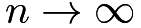
Definition 30.2 (convergence in distribution)
A sequence of random variables converges to in distribution, if
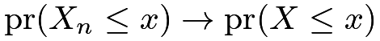 |
for all continuity point  of , as .
of , as .
Convergence in probability is stronger than convergence in distribution. Definitions 30.1 and 30.2 are useful for stating the following two fundamental theorems on the sample average of independent and identically distributed (IID) random variables.
Theorem 30.1 (law of large numbers)
If with , then in probability.
The law of large numbers in Theorem 30.1 states that the sample average is close to the population mean in the limit.
Theorem 30.2 (central limit theorem (CLT))
If with , then
in distribution.
The CLT in Theorem 30.2 states that the standardized sample average is close to a standard Normal random variable in the limit.
Theorems 30.1 and 30.2 assume IID random variables for convenience. There are also many laws of large numbers and CLTs for the sample mean of independent or weakly dependent random variable (Durrett,, 2019, e.g.,).
30.A.7 Delta method
The delta method is a power tool to derive the asymptotic Normality of nonlinear functions of an asymptotically Normal random vector. I review a special case of the delta method below.
Theorem 30.3 (delta method)
Assume in distribution and the function has non-zero derivative at . Then
in distribution.
I will omit the proof of Theorem 30.3. It is intuitive based on the first-order Taylor expansion:
So is close to the linear transformation of , which is .
As illustrations, we can use the delta method to obtain the asymptotic Normality of the ratio and product.
Example 30.1 (asymptotic Normality for the ratio)
The asymptotic variance in Example 30.1 is a little cumbersome. An easier way to memorize it is based on the following approximation:
| (156) |
so the asymptotic variance of the ratio equals the asymptotic variance of
which is a linear combination of and . Slutsky’s theorem can make the approximation in (156) rigorous but it is beyond this book.
Appendix 30.B Statistical inference
30.B.1 Point estimation
Assume that is the parameter of interest. Oftentimes, the problem also contains other parameters not of interest, denoted by . Statisticians call the nuisance parameter. Based on the data, we can compute an estimator . Throughout this book, we take the frequentist’s perspective by assuming that is a fixed number and is random due to the randomness of data. Two basic requirements for an estimator are below.
Definition 30.3 (unbiasedness)
The estimator is unbiased for if
for all possible values of and .
Definition 30.4 (consistency)
The estimator is consistent for if
in probability as the sample size approaches to infinity, for all possible values of and .
Unbiasedness requires that the mean of the estimator is identical to the parameter of interest. Consistency requires that the estimator is close to the true parameter in the limit. Unbiasedness does not imply consistency, and consistency does not imply unbiasedness either. Unbiasedness can be restrictive because it is impossible even in some simple statistics problems. Consistency is often the basic requirement in most statistics problems.
30.B.2 Confidence interval
A point estimator is a random variable that differs from the true parameter . Statisticians are often interested in finding an interval that covers the true parameter with a certain given probability. This interval is computed based on the data, and it is random.
Definition 30.5 (confidence interval)
A data-dependent interval is a confidence interval for with coverage probability at least if
for all possible values of and .
Definition 30.6 (asymptotic confidence interval)
A data-dependent interval is an asymptotic confidence interval for with coverage probability at least if
with , for all possible values of and .
A standard choice is . In Definitions 30.5 and 30.6, the coverage probabilities can be larger than the nominal level . That is, the definitions allow for over-coverage but do not allow for under-coverage. With over-coverage, we say that the confidence interval is conservative. Of course, we hope the confidence interval to be as narrow as possible. Otherwise, the definition of the confidence interval can be arbitrary.
30.B.3 Hypothesis testing
Many applied problems can be formulated as testing a hypothesis:
The decision rule is a binary function of the data: if we reject ; if we fail to reject . The type one error rate of the test is the probability of rejection if the null hypothesis holds. I review the definition below.
Definition 30.7 (type one error rate)
When holds, define the type one error rate of the test as the maximum value of the probability
over all possible values of and .
A standard choice is to make sure that the type one error rate is below . The type two error rate of the test is the probability of no rejection if the null hypothesis does not hold. I review the definition below.
Definition 30.8 (type two error rate)
When does not hold, define the type two error rate of the test as the maximum value of the probability
over all possible values of and .
Given the control of the type one error rate under , we hope the type two error rate is as low as possible when does not hold.
30.B.4 Wald-type confidence interval and test
Many statistics problems have the following structure. The parameter of interest is . We first find a consistent estimator that converges in probability to , and show that it is asymptotically Normal with mean and variance which may depend on as well as the nuisance parameter . We then find a consistent estimator for , based on analytic formulas or the bootstrap reviewed in Chapter 30.F later. The square root of is called the standard error. We finally construct the Wald-type confidence interval for as
where is the upper quantile of the standard Normal random variable. It covers with probability approximately . When this interval excludes a particular , for example, , we reject the null hypothesis , which is called the Wald test.
30.B.5 Duality between constructing confidence sets and testing null hypotheses
Consider the statistical inference problem for a scalar parameter . A fundamental result in statistics is that constructing confidence sets for is equivalent to testing null hypotheses about . This is often called the duality between constructing confidence sets and testing null hypotheses.
Section 30.B.4 has reviewed the duality based on the Wald-type confidence interval and test. The duality also holds in general. Assume that is a -level confidence set for :
Then we can reject the null hypothesis if is not in the set . This is a valid test because when indeed equals , we have the correct type one error rate . Conversely, if we test a sequence of null hypotheses , we can obtain the corresponding -values, , as a function of . Then the values of that we fail to reject at level form a confidence set for :
It is a valid confidence set because
Appendix 30.C Inference with two-by-two tables
30.C.1 Fisher’s exact test
Fisher proposed an exact test for under the statistical model:
The table below summarizes the data.
| 1 | 0 | row sum | |
|---|---|---|---|
| sample 1 | |||
| sample 0 | |||
| column sum |
He argued that the sums and contain little information about the difference between and , and conditional on them, follows a Hypergeometric distribution that does not depend on the unknown parameter under :
In R, the function fisher.test implements this test.
30.C.2 Estimation with two-by-two tables
Based on the model in Section 30.C.1, we can estimate the parameters and by sample frequencies:
Therefore, we can estimate the risk difference, log risk ratio, and log odds ratio
| rd |  |
|||
|
||||
|
by the sample analogs
|
||||
|
||||
|
Based on the asymptotic approximation (see Problem AD.5), the estimated variance for the above parameters are
respectively. The log transformation above yields better Normal approximations because the risk ratio and odds ratio are always positive.
Appendix 30.D Two famous problems in statistics
30.D.1 Behrens–Fisher problem
Consider the two-sample problem with units under the treatment and units under the control, respectively. Assume the outcomes under the treatment are IID from and the outcomes under the control are IID from , respectively. The goal is to test .
Start with the easier case with Coherent with Chapter 3, let
denote the sample means of the outcomes under the treatment and control, respectively. A standard result is that
Based on , we can construct a test for
Now consider the more difficult case with possibly different and The distribution of is no longer Estimating the variances separately, we can also define
where
are the sample variances of the outcomes under the treatment and control, respectively. Unfortunately, the exact distribution of depends on the known variances. Testing without assuming equal variances is the famous Behrens–Fisher problem. With large sample sizes and , the CLT ensures that is approximately . So we can construct an approximate test for By duality, a large-sample Wald-type confidence interval for is
where is the upper quantile of the standard Normal random variable.
30.D.2 Fieller–Creasy problem
Consider the two-sample problem with units under the treatment and units under the control, respectively. Assume the outcomes under the treatment are IID from and the outcomes under the control are IID from , respectively. The goal is to estimate . We can use to estimate . However, the point estimator has a complicated distribution, which does not yield a simple procedure to construct the confidence interval for .
Fieller’s confidence interval can be formulated as inverting tests for a sequence of null hypotheses: . Under , we have
which motivates the confidence interval
where is the upper quantile of the standard Normal random variable.
Appendix 30.E Monte Carlo method in statistics
The Monte Carlo method is a powerful tool in statistics. I will review its basic use in approximating expectations or averages, which is fundamental in understanding the idea of FRT introduced in Chapter 3.
If our goal is to calculate with being a random variable, we can simply draw IID samples from the distribution of and obtain the moment estimator for :
As a special case, is a uniform distribution over and . We can draw IID samples from to obtain the moment estimator defined above. This is called sampling with replacement, which is different from sampling without replacement reviewed in Chapter 32.
Appendix 30.F Bootstrap
It is often very tedious to derive the variance formulas for complex estimators. Efron, (1979) proposed the bootstrap as a general tool for variance estimation. There are many versions of the bootstrap (Davison and Hinkley,, 1997). In this book, we only need the most basic one: the nonparametric bootstrap, which will be simply called the bootstrap.
Consider the generic setting with
where  can be a general random element denoting the observed data for unit . An estimator is a function of the observed data: . When is a complex function, it may not be easy to obtain the variance or asymptotic variance of .
can be a general random element denoting the observed data for unit . An estimator is a function of the observed data: . When is a complex function, it may not be easy to obtain the variance or asymptotic variance of .
The uncertainty of is driven by the IID sampling of from the true distribution. Although the true distribution is unknown, it can be well approximated by its empirical version
when the sample size is large. If we believe this approximation, we can simulate by sampling
Because is a discrete distribution with mass on each observed data point, the simulation of reduces to the following procedure:
- 1.
sample from with replacement;
- 2.
compute ;
- 3.
repeat the above two steps times to obtain the bootstrap replicates .
We can then approximate the (asymptotic) variance of by the sample variance of the bootstrap replicates:
where . The bootstrap confidence interval based on the Normal approximation is then
where is the upper quantile of the standard Normal random variable.
I use the following simple example to illustrate the idea of the bootstrap. With IID observations ’s from , the sample mean should be close to  with variance . Over simulations, the classic variance estimator and the bootstrap variance estimator with both have average values close to .
with variance . Over simulations, the classic variance estimator and the bootstrap variance estimator with both have average values close to .
Appendix 30.G Homework problems
AD.1 Independent but not IID data
Assume that the ’s are independent with mean and variances for  . The parameter of interest is
Show that
is unbiased for and find its variance. Show that the usual variance estimator for IID data
. The parameter of interest is
Show that
is unbiased for and find its variance. Show that the usual variance estimator for IID data
is a conservative estimator for the variance of in the sense that
Remark: Consider a simpler case with and for all . The sample mean is unbiased for with variance . Moreover, an unbiased estimator for the variance is , where .
This problem states a more general result for the case with independent but not identically distributed observations. The result has an important implication for Theorem 7.1 for the matched-pairs experiment discussed in Chapter 7.
AD.2 Asymptotic Normality of ratio
Prove (155).
AD.3 Asymptotic Normality of product
Prove (157).
AD.4 Product of two independent Normals
Assume and . Show that
Remark: This problem gives a non-asymptotic form of Example 30.2.
AD.5 Variance estimators in two-by-two tables
Use the delta method to show the variance estimators in Section 30.C.2.
AD.6 Fisher weighting
Assume that we have independent unbiased estimators for a common parameter :
The estimator has variance .
Construct a new estimator
with nonrandom constants ’s. Show that is unbiased for estimating if . Show that the optimal ’s such that has the smallest variance under the constraint are
Show that the resulting estimator has variance
Remark: This is called Fisher weighting. The optimal weights are proportional to the inverses of the variances.